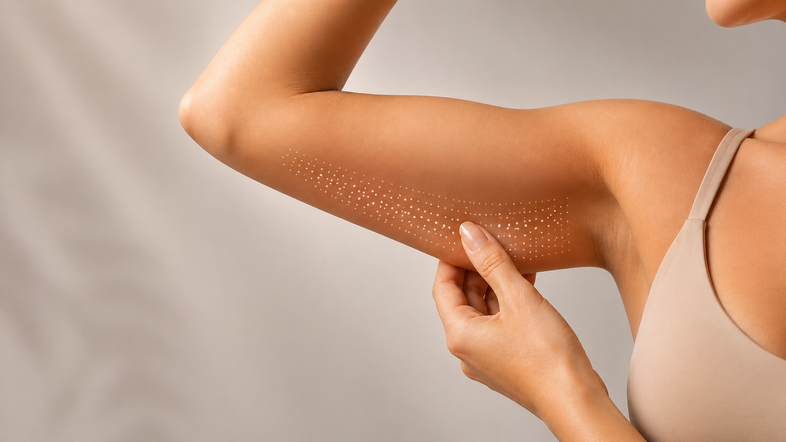
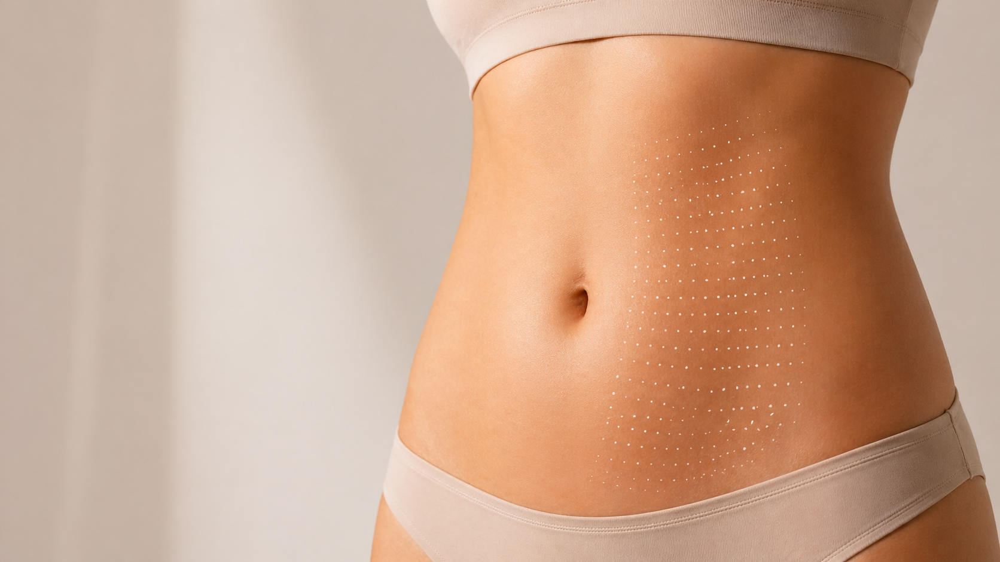
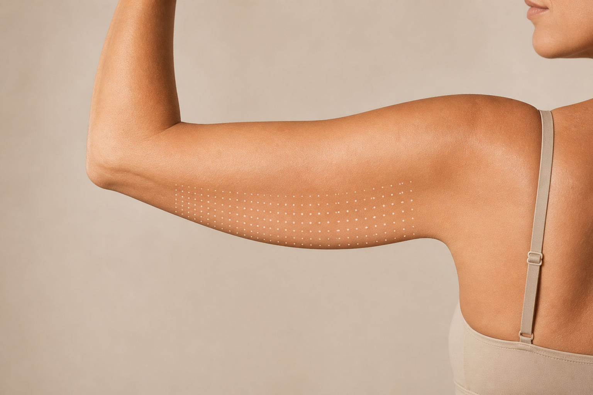

Ultherapy Skin Tightening
Un lifting visible,sans chirurgie
Désormais indiqué pour le traitement du relâchement cutané des bras et de l’abdomen
95% de satisfaction de
nos clients sur 1 an


Ultherapy® PRIME, désormais indiqué pour raffermir les bras et l’abdomen
Découvrir les nouvelles indications

Fermeté visible
Un raffermissement progressif, semaine après semaine.
Zones précises
Bras, abdomen, visage, cou : chaque zone traitée au millimètre.
Zéro chirurgie
Aucune incision, aucune anesthésie générale, aucune cicatrice.
Résultat naturel
Les volumes restent intacts, seule la tonicité change.
Action en profondeur
Les ultrasons atteignent le SMAS, la même couche que le chirurgien.
Collagène relancé
La synthèse naturelle reprend là où elle s’était ralentie.
Élasticité retrouvée
La peau se retend et retrouve une texture plus dense.
Séance unique
Un seul rendez-vous suffit dans la plupart des protocoles.
Sans éviction sociale
Pas de suites visibles. Le quotidien reprend immédiatement.
15 ans de preuves
Plus de 100 publications scientifiques valident la technologie.
Praticien expert
Chaque traitement est réalisé par un médecin formé et certifié.
Résultats durables
Les effets se maintiennent jusqu’à un an et au-delà.
Avant / Après
La différence
parle d’elle-même
Glissez le curseur pour voir la transformation. Même peau, même lumière, quelques semaines d’écart.

Indications corps
Chaque zone traitée, en détail
Bras antérieur, bras postérieur, abdomen : découvrez pourquoi ces zones répondent particulièrement bien à la technologie micro-ultrasons focalisés.
Bras antérieur
La face interne du bras est l'une des premières zones à perdre en tonicité : post-partum, variation de poids, âge. Ultherapy PRIME y agit en profondeur pour retendre la peau sans toucher aux volumes ni laisser de trace.
Trouver un praticien
Bras postérieur
La face arrière du bras concentre souvent le relâchement le plus visible, en particulier à la ménopause. Un traitement ciblé permet d'y restaurer la densité cutanée sans recours à la chirurgie.
Trouver un praticienAbdomen
Après une grossesse ou une perte de poids, la peau abdominale perd parfois en élasticité. Ultherapy PRIME stimule la production de collagène en profondeur pour redonner une tenue naturelle, sans abdominoplastie.
Trouver un praticienVisage & cou
L’expertise qui a tout commencé
Depuis 15 ans, Ultherapy PRIME fait référence sur le visage et le cou. Des résultats prouvés sur les zones qui révèlent le plus vite les signes du temps.
Lifting visage
Un effet lift progressif qui soulève les tissus et redonne de la hauteur aux joues, sans modifier les traits du visage.
Cou & décolleté
Le cou est souvent le premier à trahir l’âge. Ultherapy PRIME y restaure la tonicité et réduit l’aspect froissé de la peau.
Ovale & mâchoire
Redessine les contours du bas du visage et raffermit la ligne de mâchoire pour une silhouette plus définie.
La technologie
Ce qui se passe sous la peau
Les micro-ultrasons focalisés déposent de l’énergie thermique à une profondeur précise, déclenchant une réponse naturelle de l’organisme : production de collagène, resserrement des tissus, raffermissement progressif. Sans injection, sans bistouri.
Trouver un praticien
0:00

Protocole sur-mesure
Votre peau, votre protocole
Il n’existe pas deux peaux identiques. Chaque séance est construite autour de votre anatomie, de votre degré de relâchement et de ce que vous souhaitez obtenir.
- Évaluation précise du relâchement et de la qualité cutanée
- Paramètres ajustés à votre morphologie et à vos objectifs
- Suivi assuré par un praticien certifié Ultherapy PRIME
Résultats
Ce qui se passe après la séance
Le corps travaille pendant que vous vivez. Voici comment le raffermissement s’installe dans les semaines qui suivent le traitement.
Après 1 semaine
La zone traitée a retrouvé son rythme. Aucune trace visible, le quotidien reprend normalement pendant que la réponse biologique s'amorce en profondeur.
Après 30 jours
La peau commence à se retendre. La sensation de tonicité s'installe progressivement et les premiers changements de texture deviennent perceptibles.
Après 60 jours
Le raffermissement est maintenant visible. Les contours se redéfinissent et la peau gagne en densité sur les bras, l’abdomen ou le visage traité.
À 90 jours
Le résultat est à son plein potentiel. L’effet de fermeté est installé, naturel, et reflète exactement ce que la peau peut offrir quand son collagène est relancé.
FAQ
Vos questions, nos réponses
Tout ce que vous voulez savoir avant de consulter : le déroulement d’une séance, ce que vous ressentirez, et à quoi vous attendre dans les semaines qui suivent.
Non. Ultherapy PRIME est une technique non chirurgicale : aucune incision, aucune anesthésie générale. La séance se déroule en cabinet et vous rentrez chez vous immédiatement après.
Entre 30 et 90 minutes selon la zone traitée. Une séance visage et cou dure environ une heure ; une séance corps peut varier selon l’étendue du protocole.
Les premiers effets deviennent perceptibles vers 30 jours. Le résultat optimal s'installe autour de 90 jours, quand la production de collagène a atteint son pic.
Ultherapy PRIME traite le visage, le cou, le décolleté, les bras (face antérieure et postérieure) et l’abdomen. Le praticien détermine les zones adaptées lors de la consultation.
Oui. Les zones osseuses ou à la peau fine peuvent être plus sensibles. Le praticien adapte les paramètres en temps réel pour garantir votre confort tout au long de la séance.
Dans la majorité des cas, une séance suffit. Pour certains profils ou certaines zones, le praticien peut recommander un second traitement à 12 mois, défini ensemble lors de la consultation.
La meilleure façon de le savoir est de consulter. Le praticien évaluera votre peau, vos objectifs et vous dira si Ultherapy PRIME est la réponse la plus adaptée à votre situation.
Trouver un praticien
Le bon praticien, près de chez vous
Tous nos praticiens sont formés et certifiés Ultherapy PRIME. Entrez votre ville ou code postal pour trouver le professionnel le plus proche.